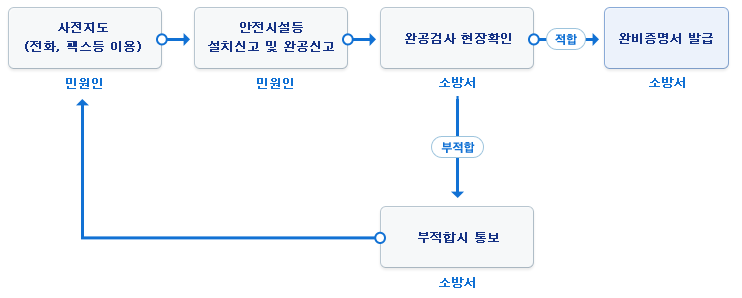
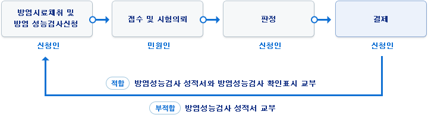

<?php include 'header.php'; ?>

	<div id="sub_wrap">
		<div class="inner clearfix">

			<nav id="left_area">
				<h3>민원안내</h3>
				<ul class="sub_menu">
					<li><a href="sub01-01.html">민원서식</a></li>
					<li><a href="sub01-02-01.html" class="ico_submenu">전자민원</a>
						<ul class="sub_depth02 clearfix">
							<li><a href="sub01-02-01.html">민원상담</a></li>
							<li><a href="https://minwon.seoul.go.kr/" class="linkout_menu" target="_blank" title="새창열기">민원신청 및 발급</a></li>
						</ul>
					</li>
					<li><a href="sub01-03-01.html" class="ico_submenu">다중이용업소</a>
						<ul class="sub_depth02 clearfix">
							<li><a href="sub01-03-01.html">완비증명절차</a></li>
							<li><a href="sub01-03-02.html">자율안전점검</a></li>
						</ul>
					</li>
					<li><a href="sub01-04.html">건축허가 동의절차</a></li>
					<li><a href="sub01-05-01.html" class="ico_submenu">화재피해주민 지원센터</a>
						<ul class="sub_depth02 clearfix">
							<li><a href="sub01-05-01.html">지원서비스 안내</a></li>
							<li><a href="sub01-05-02.html">화재증명원발급</a></li>
							<li><a href="sub01-05-03.html">구호물품등생활지원</a></li>
							<li><a href="sub01-05-04.html">의료지원</a></li>
							<li><a href="sub01-05-05.html">공무원의 재해부조금</a></li>
							<li><a href="sub01-05-06.html">의사상자의 보호</a></li>
							<li><a href="sub01-05-07.html">국세의 지원</a></li>
							<li><a href="sub01-05-08.html">지방세의 지원</a></li>
							<li><a href="sub01-05-09.html">회재보험 정보제공</a></li>
							<li><a href="sub01-05-10.html">가스사고피해자 책임보험</a></li>
							<li><a href="sub01-05-11.html">불에 탄 화폐의 교환</a></li>
							<li><a href="sub01-05-12.html">불에 탄 신분증의 재교부</a></li>
						</ul>	
					</li>
					<li><a href="sub01-06.html">소방시설 불법행위신고</a></li>
				</ul>
			</nav>
			<!-- // 좌측메뉴 -->

			<section id="right_area">

				<div class="breadcrumb clearfix">
					<h2 class="jumbo">다중이용업소 완비증명절차</h2>
					<ul>
						<li><a href="index.html" class="gohome">홈으로</a></li>
						<li>민원안내</li>
						<li>다중이용업소</li>
						<li>완비증명절차</li>
					</ul>
				</div>
				<!-- // jumbotron + breadcrumb -->

				<div class="subpage">
					<h3>다중이용업소 란?</h3>
					<div class="remarkbox">
						<p>휴게음식점, 제과점, 일반음식점, 단란주점, 유흥주점, 영화상영관, 비디오물감상실, 비디오물소극장, 학원, 목욕장, 게임제공업, 인터넷컴퓨터게임시설제공업, 복합유통게임제공업, 복합영상물제공업, PC방, 독서실, 찜질방, 노래연습장, 산후조리업, 고시원, 전화방, 화상대화방, 수면방, 콜라텍, 실내권총사격장, 스크린골프연습장, 안마시술소</p>
					</div>

					<h3>다중이용업소 완비증명 처리 흐름도</h3>
					<div class="imgbox"></div>
					<dl class="subTxt">
						<dd>안전시설등의 설치신고 접수</dd>
						<dd>안전시설등의 설치신고 서류검토 및 처리완료 <br>[민원인에게 공문발송 : 적합(설치신고서 처리완료, 화재안전기준기준에 적합하게 시공), 부적합(부적합내용 보완 후 재신고)]</dd>
						<dd>안전시설등의 완공신고</dd>
						<dd>안전시설등의 완공검사 서류검토 및 현장확인(부적합: 부적합 내용을 보완하신 후 완공검사 재신청)</dd>
						<dd>안전시설등 완비증명서 발급(적합시)</dd>
					</dl>

					<h3>안전시설등 완비증명서 발급 대상</h3>
					<div class="remarkbox">
						<p>우리 시에서는 관계인 중심의 자율적인 다중이용업소 안전관리 분위기를 조성하기 위하여 『다중이용업소 자율안전점검 센터』를 운영하고 있습니다. 다중이용업소의 관계인은 다중이용업소의 안전관리에 관한 특별법 제13조, 동법 시행규칙 제14조(다중이용업주의 안전시설 등에 대한 정기점검)의 규정에 의하여 분기별 1회 이상 정기점검을 실시하여야 합니다. 다중이용업소의 관계인께서는 자율점검 후 아래 점검표를 작성하여『다중이용업소 자율안전점검센터』로 제출하시면 됩니다. 다중이용업소의 안전한 환경 조성을 위하여 협조 부탁드립니다.</p>
					</div>
					<dl class="subTxt">
						<dd>다중이용업소 23개 업종(다중이용업소의 안전관리에 관한 특별법 시행령 제2조)</dd>
						<dd>업종별 세부기준</dd>
					</dl>
					<ul class="subBtnArea subBtnNum1 clearfix">
						<li><a href="#" class="subBtn downicon" title="다중이용업소 안전시설등 증명서 발급 가이드 다운">다중이용업소 안전시설등 증명서 발급 가이드 다운</a></li>
					</ul>
					<table class="tb_default tb_nth2_left tb_nth1_bold tb_font_size15 tb_tbodyth_bg tb_tbody_topline th_vline" cellpadding="0" cellspacing="0" border="0" summary="다중이용업소 업종별 세부기준">
						<caption>다중이용업소 업종별 세부기준</caption>
						<colgroup>
							<col width="25%" />
							<col width="75%" />
						</colgroup>
						<tbody>
							<tr>
								<th scope="row">운영시간</th>
								<th>기준</td>
							</tr>
							<tr>
								<th scope="row">휴게음식점영업</th>
								<td rowspan="3">-지하층：66㎡ 이상 <br>-지상층：2층 이상은 100㎡ 이상 <br>※단, 주 출입구가 1층 또는 피난층에 면한 영업장은 제외</td>
							</tr>
							<tr>
								<th scope="row">제과점영업</th>
							</tr>
							<tr>
								<th scope="row">일반음식점영업</th>
							</tr>
							<tr>
								<th scope="row">단란ㆍ유흥주점영업</th>
								<td rowspan="2">-층별, 면적 구분 없이 적용</td>
							</tr>
							<tr>
								<th scope="row">영화상영관 <br>비디오물감상실업 <br>비디오물소극장업</th>
							</tr>
							<tr>
								<th scope="row">학원</th>
								<td>-수용인원 300인 이상인 것 (연면적 570㎡ 이상) <br>-수용인원 100인 이상 300인 미만 인 것 중 다음 각 호 해당 <br>단, 건축법시행령 제46조에 따른 방화구획으로 나누어진 경우 제외 <br>1개의 건축물에 학원과 기숙사가 함께 있는 학원 <br>1개의 건축물에 학원이 2 이상 있는 경우로 학원의 수용인원이 300인 이상인 학원 <br>1개의 건축물에 다중이용업과 학원이 함께 있는 경우</td>
							</tr>
							<tr>
								<th scope="row">목욕장업</th>
								<td>-일반목욕장업：층별, 면적 구분 없이 수용인원 100인 이상(찜질방형태 시설을 갖춘 것) <br>-찜질방형태의 목욕장업：층별, 면적 구분 없이 적용</td>
							</tr>
							<tr>
								<th scope="row">게임제공업, 인터넷 <br>컴퓨터게임시설제공업 <br>복합유통게임제공업</th>
								<td>-층별, 면적 구분 없이 적용 <br>※단, 게임제공업 및 인터넷컴퓨터게임시설제공업은 주 출입구가 1층 또는 피난층에 면한 영업장은 제외</td>
							</tr>
							<tr>
								<th scope="row">노래연습장업</th>
								<td>-층별, 면적 구분 없이 적용</td>
							</tr>
							<tr>
								<th scope="row">산후조리원업</th>
								<td>-층별, 면적 구분 없이 적용</td>
							</tr>
							<tr>
								<th scope="row">고시원업</th>
								<td>-층별, 면적 구분 없이 적용</td>
							</tr>
							<tr>
								<th scope="row">복합영상물제공업</th>
								<td>-층별, 면적 구분 없이 적용</td>
							</tr>
							<tr>
								<th scope="row">권총사격장</th>
								<td>-층별, 면적 구분 없이 적용</td>
							</tr>
							<tr>
								<th scope="row">골프연습장업</th>
								<td>-층별, 면적 구분 없이 적용 <br>※실내의 구획된 실에 스크린과 영사기 등의 시설을 갖춘 것</td>
							</tr>
							<tr>
								<th scope="row">안마시술소</th>
								<td>-층별, 면적 구분 없이 적용</td>
							</tr>
							<tr>
								<th scope="row">신종다중이용업 <br>전화방업ㆍ화상대화방업<br>수면방업ㆍ콜라텍업</th>
								<td>-층별, 면적 구분 없이 적용</td>
							</tr>
						</tbody>
					</table>

					<h3>완비신청 구비서류</h3>
					<dl class="subTxt">
						<dt>안전시설등의 설치신고서</dt>
						<dd>소방시설설계업자가 작성한 안전시설등의 설계도서</dd>
						<dd>안전시설등의 설치내역서</dd>
						<dt>안전시설등의 완공신고서</dt>
						<dd>설치신고 시 제출한 첨부한 서류 중 달라진 내용이 있는 경우에만 제출</dd>
					</dl>

					<h3>민원처리 기간 등</h3>
					<dl class="subTxt">
						<dt>민원처리 기간</dt>
						<dd>안전시설등의 설치신고시 : 3일</dd>
						<dd>안전시설등의 완공신고시 : 3일</dd>
						<dt>수수료 : 없음</dt>
						<dt>처리부서 : 관할소방서 예방과</dt>
					</dl>

					<h3>설치하여야 하는 소방시설 등 종류</h3>
					<table class="tb_default tb_nth2_left tb_nth1_bold tb_font_size15 tb_tbodyth_bg tb_tbody_topline th_vline" cellpadding="0" cellspacing="0" border="0" summary="설치하여야 하는 소방시설 종류와 세부설치시설">
						<caption>설치하여야 하는 소방시설 종류와 세부설치시설</caption>
						<colgroup>
							<col width="25%" />
							<col width="75%" />
						</colgroup>
						<tbody>
							<tr>
								<th scope="row">종류</th>
								<th>세부설치시설</td>
							</tr>
							<tr>
								<th scope="row">소방시설</th>
								<td>소화기 또는 자동확산소화용구, 간이스프링클러, 유도등ㆍ 유도표지 또는 비상조명등, 휴대용비상조명등, 피난기구, 비상벨설비 또는 비상방송설비</td>
							</tr>
							<tr>
								<th scope="row">안전시설</th>
								<td>비상구, 가스누설경보기, 보일러실과 영업장 사이의 방화구획, 영상음향차단장치, 피난유도선, 영업장의 내부 통로, 영업장 창문</td>
							</tr>
							<tr>
								<th scope="row">방염처리</th>
								<td>실내장식물(합판, 목재)</td>
							</tr>
						</tbody>
					</table>

					<h3>방염가능성검사 업무처리흐름도(2004.11.30이후) 10일</h3>
					<div class="imgbox"></div>

					<h3>다중이용업소의 방염</h3>
					<dl class="subTxt">
						<dt>방염대상물품</dt>
						<dd>창문에 설치하는 커텐류(브라인드를 포함한다)</dd>
						<dd>카페트, 두께가 2밀리미터 미만인 벽지류로서 종이벽지를 제외한 것</dd>
						<dd>전시용합판 또는 섬유판, 무대용합판 또는 섬유판</dd>
						<dd>암막ㆍ무대막(영화상영관 스크린 포함)</dd>
						<dt>실내장식물</dt>
						<dd>종이류 (두께 2mm 이상)ㆍ합성수지류 또는 섬유류를 주원료로 한 물품</dd>
						<dd>합판ㆍ목재</dd>
						<dd>실 또는 공간을 구획하기 위하여 설치하는 칸막이 또는 간이 칸막이</dd>
						<dd>흡음이나 방음을 위하여 설치하는 흡음재(흡음용 커텐 포함) 또는 방음재(방음용 커텐 포함) <br>※ 가구류(옷장, 찬장, 식탁, 식탁용 의자, 사무용의자 및 계산대, 그 밖에 이와 비슷한 것)와 너비 10㎝ 이하인 반자돌림대 등과 건축법 제43조에 따른 마감재료는 제외</dd>
					</dl>
					<ul class="subBtnArea subBtnNum1 clearfix">
						<li><a href="#" class="subBtn downicon" title="다중이용업소 방염성능검사 가이드 다운">다중이용업소 방염성능검사 가이드 다운</a></li>
					</ul>

					<h3>방염성능검사 업무처리</h3>
					<table class="tb_default tb_nth2_left tb_nth1_bold tb_font_size15 tb_tbodyth_bg tb_tbody_topline th_vline" cellpadding="0" cellspacing="0" border="0" summary="방염성능검사 업무처리절차 및 내용">
						<caption>방염성능검사 업무처리절차 및 내용</caption>
						<colgroup>
							<col width="25%" />
							<col width="75%" />
						</colgroup>
						<tbody>
							<tr>
								<th scope="row">절차</th>
								<th>내용</td>
							</tr>
							<tr>
								<th scope="row">신청</th>
								<td>- 신청서 및 시공내역서 (민원인) <br>- 시료(19×29cm의 크기) 첨부</td>
							</tr>
							<tr>
								<th scope="row">접수</th>
								<td>- 수수료납부(수입증지20,00원)사항 확인 <br>- 방염처리면적 및 방염도료 사용내역 확인</td>
							</tr>
							<tr>
								<th scope="row">시험</th>
								<td>- 40±2℃의 항온건조기로 24시간 건조 <br>- 잔염시간, 잔신시간, 탄화길이, 탄화면적 측정</td>
							</tr>
							<tr>
								<th scope="row">판정·결재</th>
								<td>- 기준에 적합여부 판정 <br>- 결재 및 성적서 발급</td>
							</tr>
							<tr>
								<th scope="row">통보</th>
								<td>- 신청인에게 합격 여부 통보</td>
							</tr>
						</tbody>
					</table>
					<dl class="subTxt">
						<dt>대 상 : 목재ㆍ합판(현장방염처리물품)</dt>
						<dt>업무처리 절차(민원처리 기간 10일)</dt>
						<dt>방염성능검사 물품의 시료채취</dt>
						<dd>목재 및 합판의 종류별로 1개 이상 / 방염처리방법별로 1개 이상</dd>
						<dd>크기는 가로 29cm, 세로 19cm 이상</dd>
						<dt>방염성능검사 성적서 교부</dt>
						<dd>합격 시 : 방염성능검사 성적서와 방염성능 검사확인표시 교부</dd>
						<dd>불합격 시 : 방염성능검사 성적서</dd>
					</dl>

				</div>
				<!-- // 서브컨텐츠 -->
			</section>
		</div>
	</div>

<?php include 'footer.php'; ?>
